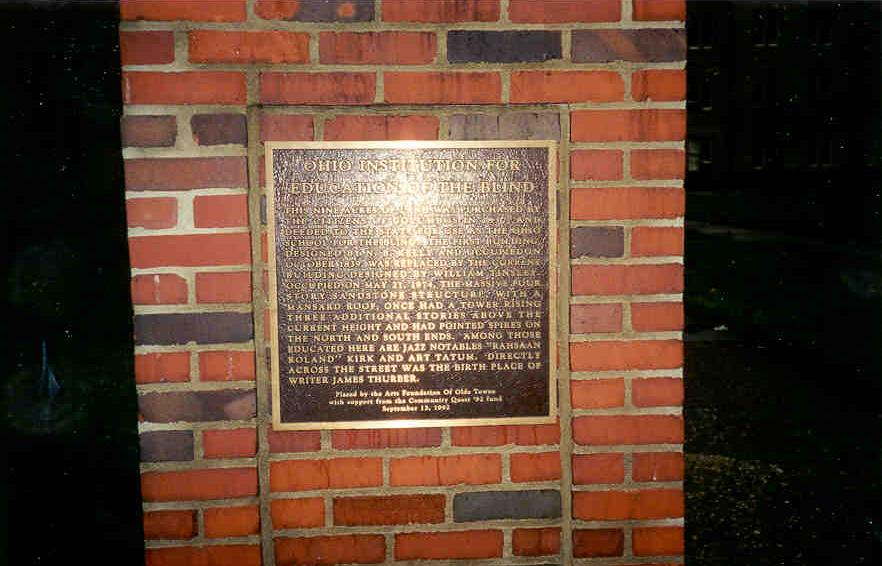

Columbus School for the Blind
My personal pick for greatest building in Columbus is the old School for the Blind at the intersection of Parsons and Main Street. It's hard to miss if you've ever been by it. You might know it as the headquarters for the Ohio State Highway Patrol, which it was for a while, or the state Department of Health, which it is now.
The first Blind School was built in 1837 and demolished in 1874, after which it was replaced with this massive, sandstone building. There was once a taller tower on the building, along with two spires which rose above either wing.
In early May of 2000 I got the chance to explore the Blind School at night, along with Hoss, Rookie, and two other friends. I was blown away by how amazing the place was, even though it's been remodeled several times and was in the process of being turned into something else. Most of the rear section of the building had been demolished when we explored it, and from what a set of blueprints we saw said, more was slated to go. At least they kept the main building.

Click here to explore the building

Back
forgottenohio@yahoo.com
facebook.com/andy.henderson.319
{kind=link}
{kind=link}
{kind=link}
{kind=link}